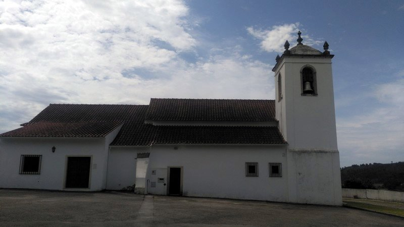
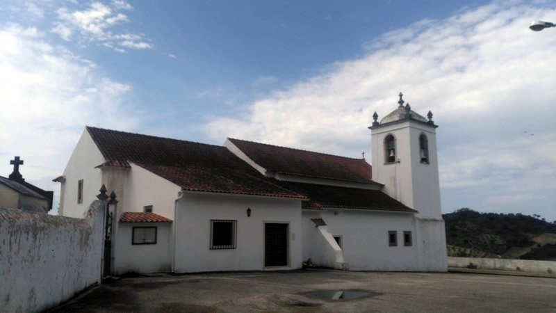

Património religioso
Igreja Matriz
Construída fora do povoado, no alto do outeiro que deu nome à terra.
Ver no mapa →Uma aldeia antiga no leste do concelho de Rio Maior, a caminho de Santarém. Igrejas e capelas, fontes, miradouros e boa gente.
É uma freguesia muito antiga: o livro de registo paroquial mais antigo que se conhece data de 1663. Nesse tempo, a terra chamava-se Ribeira da Cortiçada.
A igreja foi construída fora do povoado, no alto de um outeiro. É provavelmente daí que vem o nome atual. A matriz tinha só a Irmandade de Nossa Senhora do Rosário, e havia uma única ermida, a de São Pedro, no lugar de Correias.
Hoje, Outeiro da Cortiçada faz parte da União das Freguesias de Outeiro da Cortiçada e Arruda dos Pisões.

Fica no leste do concelho de Rio Maior, na fronteira com o concelho de Santarém, junto a Arruda dos Pisões, São Sebastião e Fráguas. São cerca de 12 km desde Rio Maior e 25 km desde Santarém.
Abrir no Google Maps